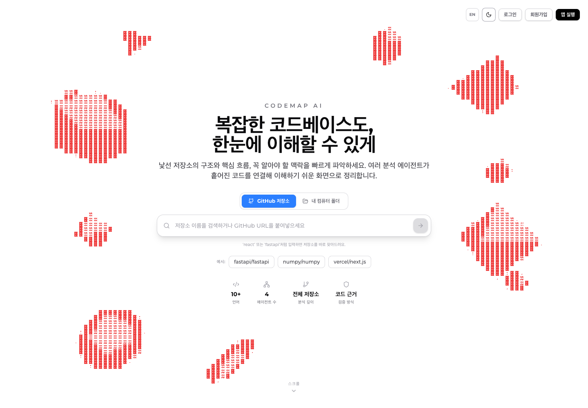
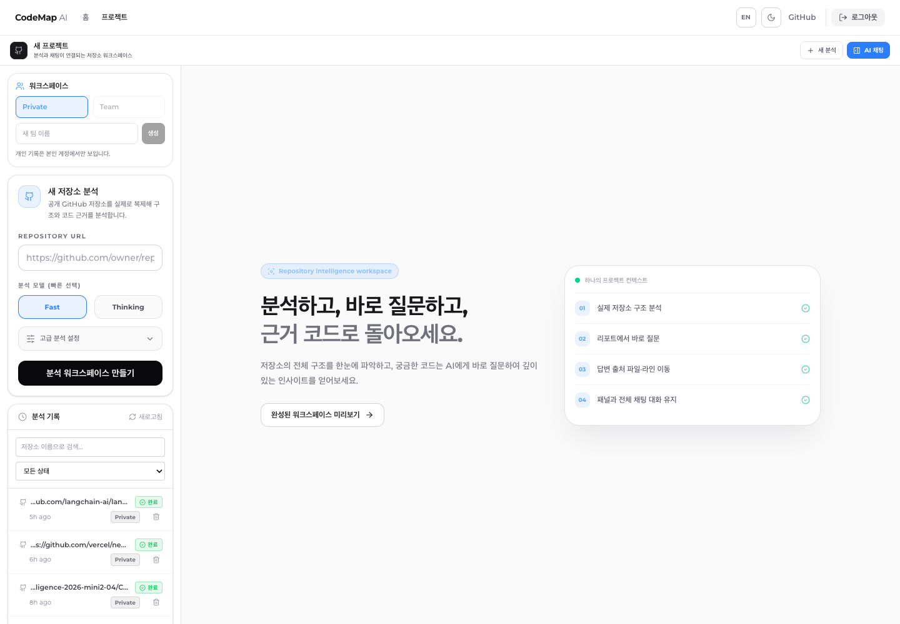
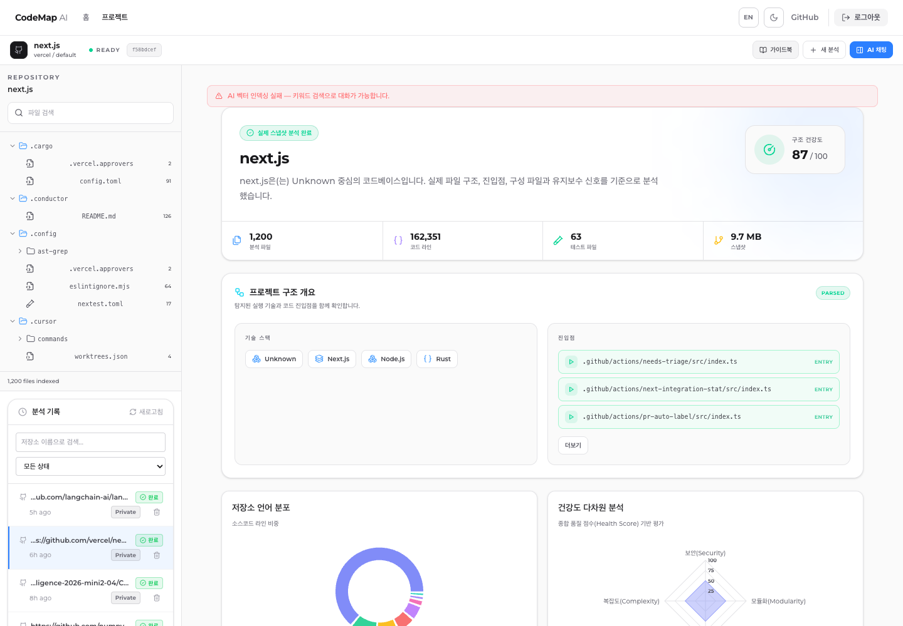
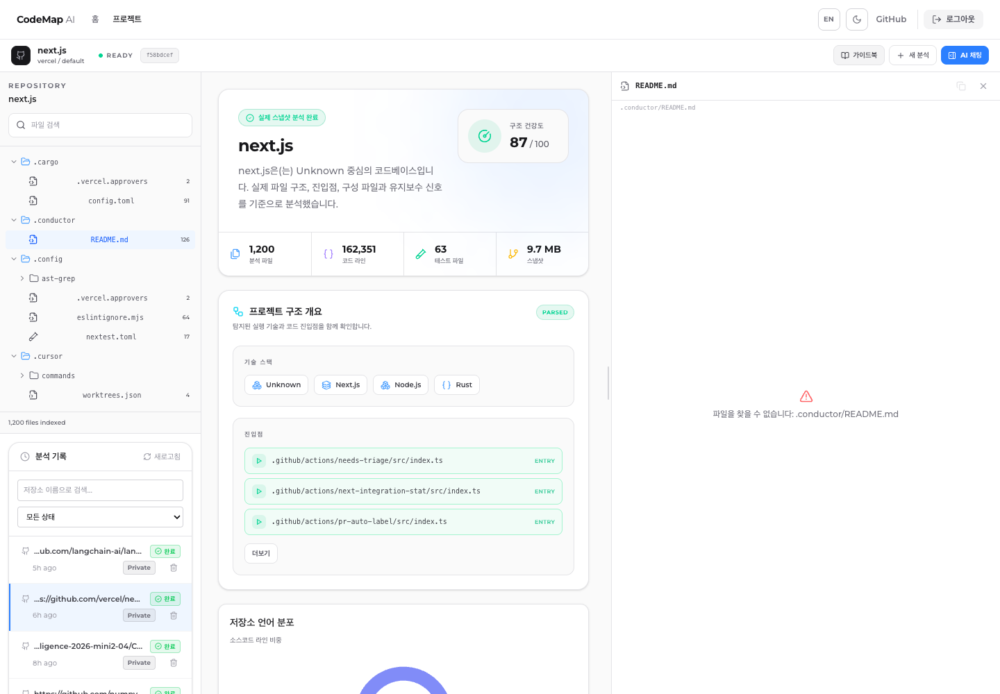

정적 분석과 일반 챗봇의 사이
README만으로 진입점, 의존성, 실행 방법 파악 불가
단순 챗봇은 근거 파일, 라인 추적 없이 부분 답변만 출력
CodeMap은 이 간극을 채우는 능동적 분석 도구를 지향
GitHub 저장소 URL 하나로 저장소 구조, 핵심 파일, 실행 흐름, 코드 근거 분석 신규 개발자가 바로 이해 가능한 대화형 온보딩 경험 제공 서비스
README만으로 진입점, 의존성, 실행 방법 파악 불가
단순 챗봇은 근거 파일, 라인 추적 없이 부분 답변만 출력
CodeMap은 이 간극을 채우는 능동적 분석 도구를 지향
Planner → Dispatcher → Worker → Evaluator
협력 통해 코드 탐색, 검색 실패 시 재탐색 근거 남기는Multi Agentic RAG 4단계 파이프라인을 구현
구조 요약, 파일 읽기 순서, 라인 단위 근거 칩,
분석 대시보드 통해 코드베이스 파악에 필요한
시간과 인지 부담 감소프론트엔드 : Feature-Sliced Design과 Bulletproof React 철학 적용
백엔드 : 도메인별 router-service-repository-model 구조 사용
docs/ 폴더에 요구사항 명세서, API 계약, 설계 결정 문서 관리 및 코드 변경 시 함께 현행화핵심 요구사항은 “빠른 분석 화면 복원”, “근거 기반 답변”, “코드 라인 이동”, “문서 산출물 생성”으로 압축됩니다.
Phase 1 · 2 아우르는 기능 사양서와 15개 이상의 상세 스펙 문서 통한 요구사항 체계화
CodeWiki, RepoLens, CodeRAG 등 유사 서비스 비교 분석해 CodeMap만의 차별점 도출
Multi-Agent 아키텍처, 임베딩 모델 선택, 에러 처리 등
핵심 설계 근거 문서화
기존 1회성 상태를 넘어서 DB 대화 이력과 LangGraph checkpoint 함께 사용. 프로젝트별 `sessionId` 기준으로 이전 질문 · 답변 근거가 Planner 입력에 복원
code_nodes.embedding에 HNSW cosine index 적용해 1536차원 임베딩 검색을 빠르게 수행
job_id + path + chunk_index 유니크 제약과 in-progress 부분 유니크 인덱스 통해 중복 분석 제어
채팅 메시지, references, checkpoints를 분리 저장해 UI 복원과 Agent 실행 복원을 동시 지원합니다.
email, hashed_password, refresh_tokens FK로 회원 인증 기준을 보존
user_id, token, expires_at 인덱스로 JWT 재발급과 로그아웃 처리
repo_url, branch, status, stage, progress, report_json, user/team 범위
repo_id, file_path, raw_code, file_summary로 원본 파일 스냅샷 저장
file_id, start_line, end_line, symbol, language, embedding_vector 검색 단위
source_file_id와 target_file_path로 파일 import fan-in/out 구성
job_id, path, type, depth, chunk_index, content, summary, embedding, metadata
source_id, target_id, relation 복합 PK로 코드 노드 간 의존 관계 저장
repo_id, job_id, doc_type, content, version, is_active, report_json
repo_id별 title, created_at, updated_at으로 대화 스레드 복원
conversation_id, role, content, mode, references JSONB로 근거 칩 보존
teams, members, invites로 공유 범위 관리. checkpoints/blobs/writes는 Agent 상태 저장


AsciiScene Hero로 “코드 지도를 그린다”는 제품 첫인상을 전달RepositoryLauncher는 URL 입력 즉시 분석 페이지로 이동InteractiveDemo는 framer-motion과 타이머 제어로 AI 분석 흐름을 자동 시연합니다.단순 홍보 화면이 아니라 “입력 → 분석 → 근거 확인”으로 이어지는 실제 제품 첫 화면입니다.
AsciiScene 배경 + Badge + 타이틀 + RepositoryLauncher + 예시 저장소(fastapi, numpy, next.js) + 통계 행
FastAPI 의존성 흐름, NumPy 구조 분석, Requests 보안 탐색 — 각 시나리오를 자동 순환 시연
Hero → Trending → How It Works → Demo → Bento Features → Security → Use Cases → FAQ → CTA


사용자-facing 파일 프리뷰는 repo 도메인의 job-scoped API 통해서만 접근
`line`, `lineStart`, `lineEnd`, `lineLabel`을 모두 흡수해 기존/신규 API 계약을 함께 지원
큰 파일은 일정 길이에서 잘라 표시, 복사·닫기·오류 상태를 UI에서 분리
CodeMap은 단순 코드 검색기가 아닌, 저장소 분석 통해 근거를 제시해 온보딩 산출물까지 제작하는 “검증 가능한 AI 코드베이스 안내자”를 목표로 구현되었습니다.
낯선 코드베이스에서 발생하는 이해의 비대칭을 해소하고, 시니어의 반복 설명을 줄이며, 신입의 막막함을 없애는 협업 온보딩 플랫폼을 지향합니다.